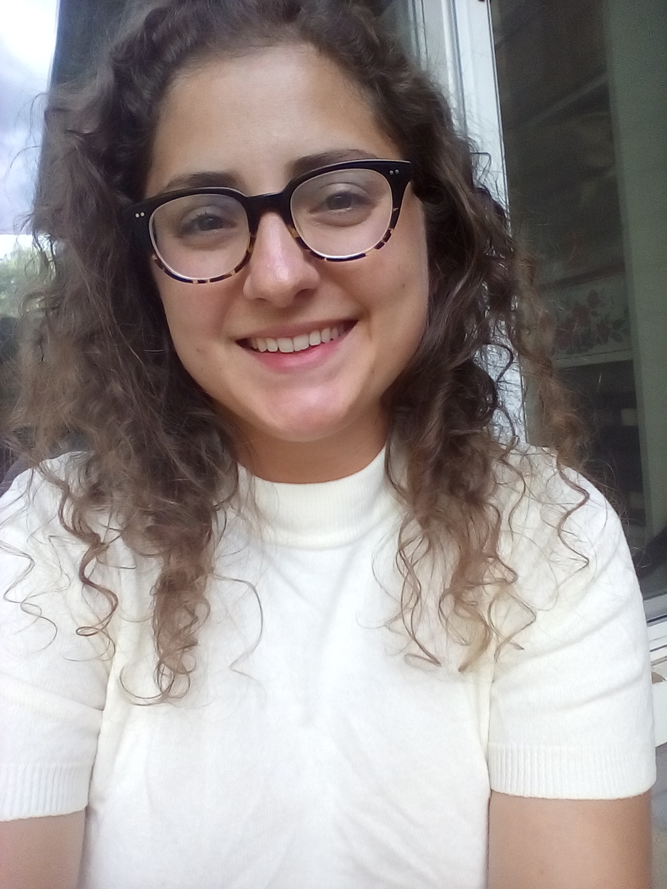

Wolf
Jaw
Zine
Read good poetry for free.
Publish good poetry for pay.
Upcoming Issue
- The second issue is almost out; check the Issues page for the link to read Winter 2021, Life During Wartime, which features the work of five poets:
- Nicholas Dertinger
- Maroula Blades
- Vanessa Scott
- Julia Vu
- Angelica Julia Davila
Call for Submissions will reopen Fall 2021
- Payment to Accepted Poets: $100
- Deadline: ---
- Issue: Winter 2022
- Title: I can Make Love to Myself
- Instructions: ---
- Decisions: Within six weeks of deadline

Mindfulness Talks for Kids
Wolf Jaw Magazine Founder Emily Lagattolla, a literature and math teacher who has taught in schools in Illinois and Mexico, gives talks at schools and other organizations about mindfulness, a stress-reduction technique from the Buddhist tradition. Emily has been developing her meditation practice at Blue Lotus Temple in Woodstock, IL since 2018. The 40-minute talk is geared towards elementary school children and entitled "The Logic of Accepting What is." It is adaptable for other audiences.
Contact
xyzine.lit@gmail.com